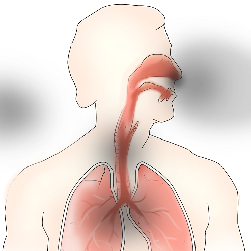

· 원인
· 특징
① 열기에 의한 손상은 일과성으로 상부호흡기에 국한되는 경우가 많습니다.
② 직접적인 열기 보다는 유독가스 흡입에 의한 폐손상이 더욱 빈번합니다.
③ 유독가스의 미세입자는 폐포에 침투하여 폐세포에 화학적손상을 일으킵니다.
④ 다량의 연기를 마신 경우는 짧은 시간 내에 질식으로 위험해 질 수 있으며, 다량의 연기가 아니더라도 폐의 화학적 손상으로 인하여 2~7일 경과 후 ‘급성호흡곤란증후군(ARDS)’이 발생 할 수 있습니다.
⑤ 기침이나 목소리 변성 등의 호흡기 증상을 보일 정도로 가스를 마신 경우에는 반드시 입원하여 2~3일 이상 급성호흡곤란증후군에 대한 주의 깊은 관찰이 필요합니다.